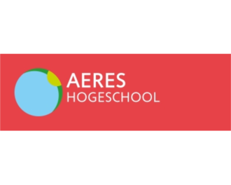
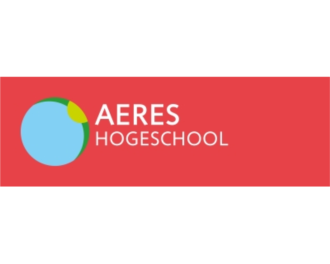

Wat weet je over AD
Associate degrees (Ad’s) zijn tweejarige hbo-opleidingen die opleiden tot beroepskwalificerend eindonderwijs. Het eindniveau van de Ad sluit aan op EQF-/NLQF-niveau 5 en op de Dublin descriptoren short cycle.
Associate degrees (Ad’s) zijn tweejarige hbo-opleidingen die opleiden tot beroepskwalificerend eindonderwijs. Het eindniveau van de Ad sluit aan op EQF-/NLQF-niveau 5 en op de Dublin descriptoren short cycle.
Samen sterker in niveau 5: NHL Stenden Ad-opleidingen inspireren elkaar op Terschelling
Lees meerNieuw: gecombineerd (Ad en Ba) landelijk opleidingsprofiel Management in de Zorg
Lees meerSave the date: Landelijke Ad-dag 17 april 2026 locatie: Hanze - Groningen
Lees meer
 


Op dit moment zijn een aantal thema’s actueel. Voor deze thema’s organiseert het Platform werk- of projectgroepen.
Lees meer
In de LAdO’s wordt onder andere gewerkt aan het beschrijven van de opleidingsprofielen van de Ad-opleidingen.
Lees meer
Er is regelmatig nieuws te delen via deze website. Klik op de knop voor meer.
Lees meer